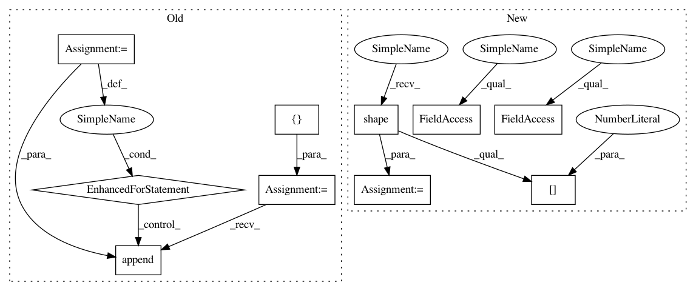

8aaabd6dfcd2f4ae5618ef08657bbba82e8bd69f,mesh_renderer/rasterize_triangles.py,,rasterize_clip_space,#Any#Any#Any#Any#Any#Any#,69
Before Change
vertex_count = clip_space_vertices.shape[1].value
per_image_barycentric_coordinates = []
per_image_vertex_ids = []
for im in range(clip_space_vertices.shape[0]):
barycentric_coords, triangle_ids, _ = (
rasterize_triangles_module.rasterize_triangles(
clip_space_vertices[im, :, :], triangles, image_width,
image_height))
per_image_barycentric_coordinates.append(
tf.reshape(barycentric_coords, [-1, 3]))
// Gathers the vertex indices now because the indices don"t contain a batch
// identifier, and reindexes the vertex ids to point to a (batch,vertex_id)
vertex_ids = tf.gather(triangles, tf.reshape(triangle_ids, [-1]))
reindexed_ids = tf.add(vertex_ids, im * clip_space_vertices.shape[1].value)
per_image_vertex_ids.append(reindexed_ids)
barycentric_coordinates = tf.concat(per_image_barycentric_coordinates, axis=0)
vertex_ids = tf.concat(per_image_vertex_ids, axis=0)
// Indexes with each pixel"s clip-space triangle"s extrema (the pixel"s
After Change
vertex_count = clip_space_vertices.shape[1].value
batch_size = tf.shape(clip_space_vertices)[0]
per_image_barycentric_coordinates = tf.TensorArray(dtype=tf.float32, size=batch_size)
per_image_vertex_ids = tf.TensorArray(dtype=tf.int32, size=batch_size)
def condition(b, *args):
return b < batch_size
def iteration(b, per_image_barycentric_coordinates, per_image_vertex_ids):
barycentric_coords, triangle_ids, _ = (
rasterize_triangles_module.rasterize_triangles(
clip_space_vertices[b, :, :], triangles, image_width,
image_height))
per_image_barycentric_coordinates = per_image_barycentric_coordinates.write(b, tf.reshape(barycentric_coords, [-1, 3]))
vertex_ids = tf.gather(triangles, tf.reshape(triangle_ids, [-1]))
reindexed_ids = tf.add(vertex_ids, b * clip_space_vertices.shape[1].value)
per_image_vertex_ids = per_image_vertex_ids.write(b, reindexed_ids)
return b+1, per_image_barycentric_coordinates, per_image_vertex_ids
b = tf.placeholder_with_default(0, shape=[])
_, per_image_barycentric_coordinates, per_image_vertex_ids = tf.while_loop(condition, iteration, [b, per_image_barycentric_coordinates, per_image_vertex_ids])
barycentric_coordinates = tf.reshape(per_image_barycentric_coordinates.stack(), [-1, 3])
vertex_ids = tf.reshape(per_image_vertex_ids.stack(), [-1, 3])
In pattern: SUPERPATTERN
Frequency: 4
Non-data size: 10
Instances
Project Name: google/tf_mesh_renderer
Commit Name: 8aaabd6dfcd2f4ae5618ef08657bbba82e8bd69f
Time: 2019-05-28
Author: david.erler@gmail.com
File Name: mesh_renderer/rasterize_triangles.py
Class Name:
Method Name: rasterize_clip_space
Project Name: tensorflow/cleverhans
Commit Name: 4887ef8baecbf5315ec0f235e56a4f93cd05aad7
Time: 2018-10-04
Author: nottombrown@gmail.com
File Name: cleverhans/attacks_tf.py
Class Name:
Method Name: spm
Project Name: NifTK/NiftyNet
Commit Name: 5fb4404583ecffdee8cf98e4ae9e0a91d479f071
Time: 2018-08-07
Author: wenqi.li@ucl.ac.uk
File Name: niftynet/layer/loss_regression.py
Class Name: LossFunction
Method Name: layer_op
Project Name: google/tf_mesh_renderer
Commit Name: 8aaabd6dfcd2f4ae5618ef08657bbba82e8bd69f
Time: 2019-05-28
Author: david.erler@gmail.com
File Name: mesh_renderer/rasterize_triangles.py
Class Name:
Method Name: rasterize_clip_space
Project Name: NifTK/NiftyNet
Commit Name: 5fb4404583ecffdee8cf98e4ae9e0a91d479f071
Time: 2018-08-07
Author: wenqi.li@ucl.ac.uk
File Name: niftynet/layer/loss_segmentation.py
Class Name: LossFunction
Method Name: layer_op